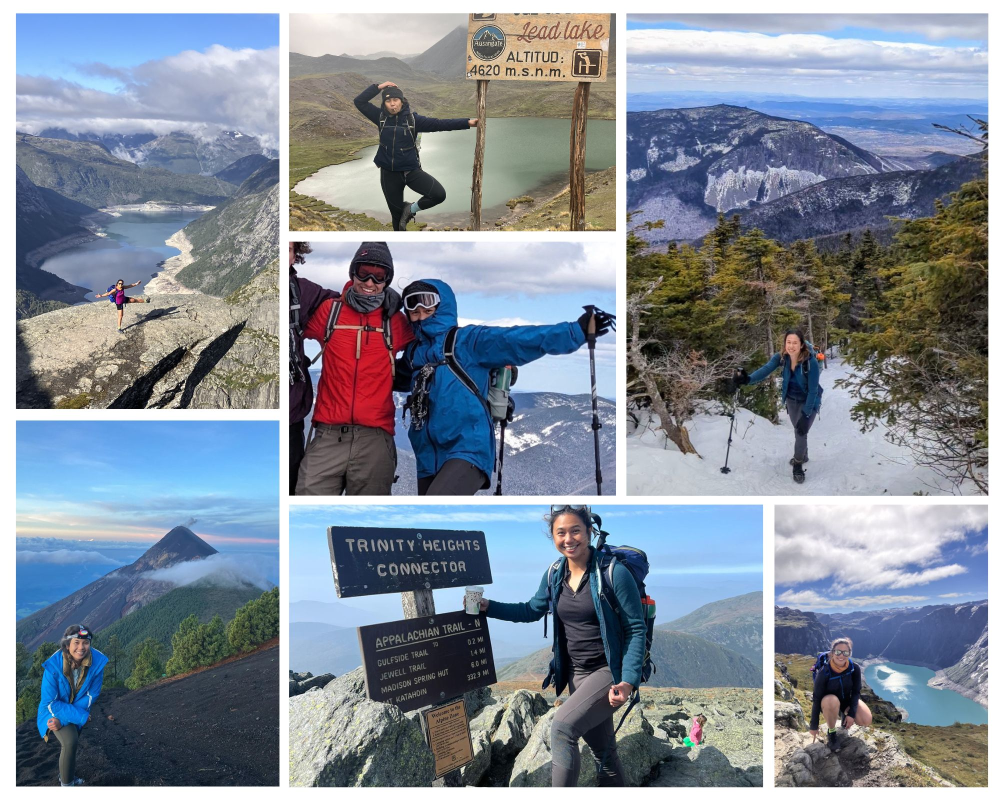
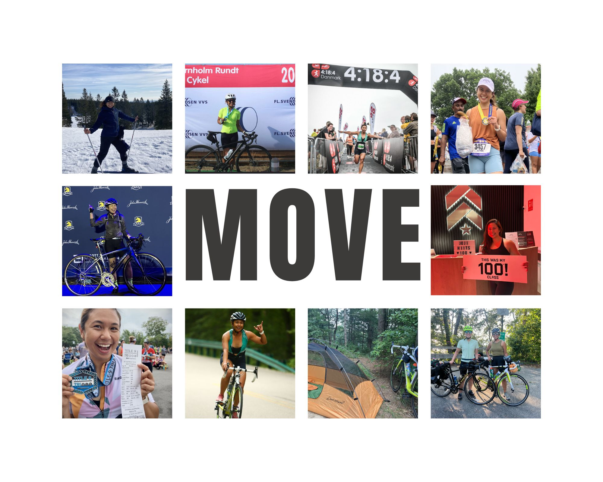
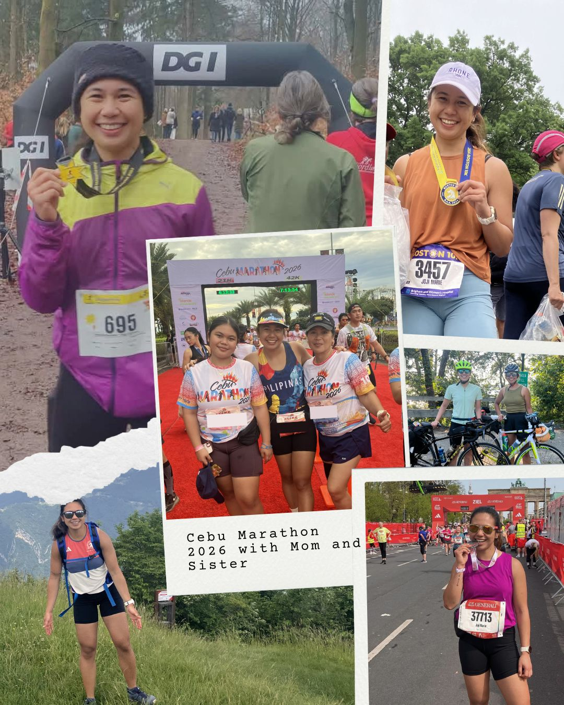
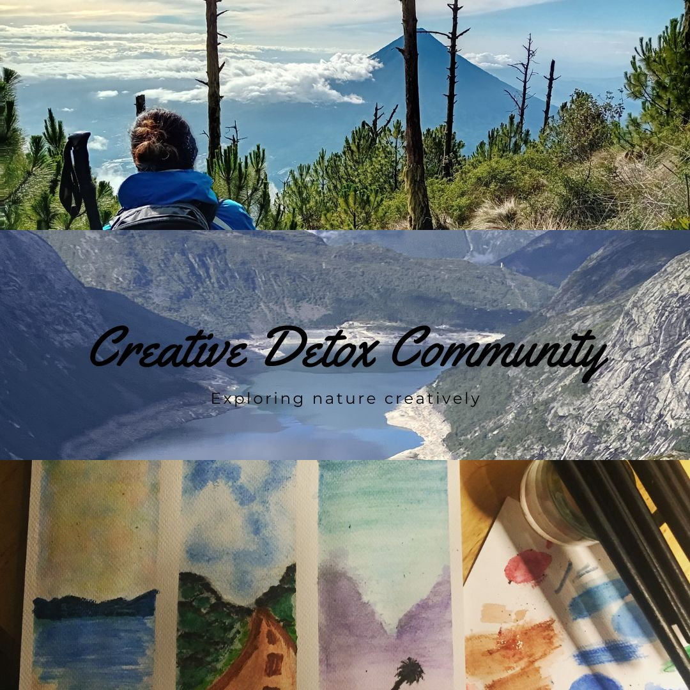
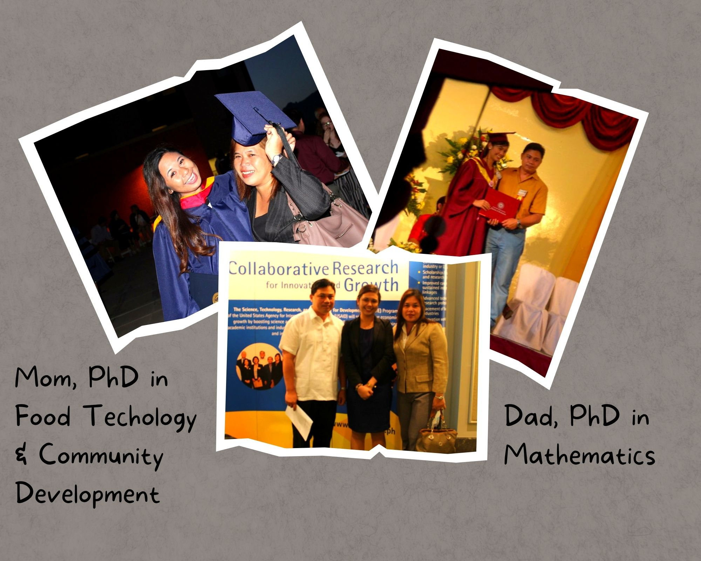
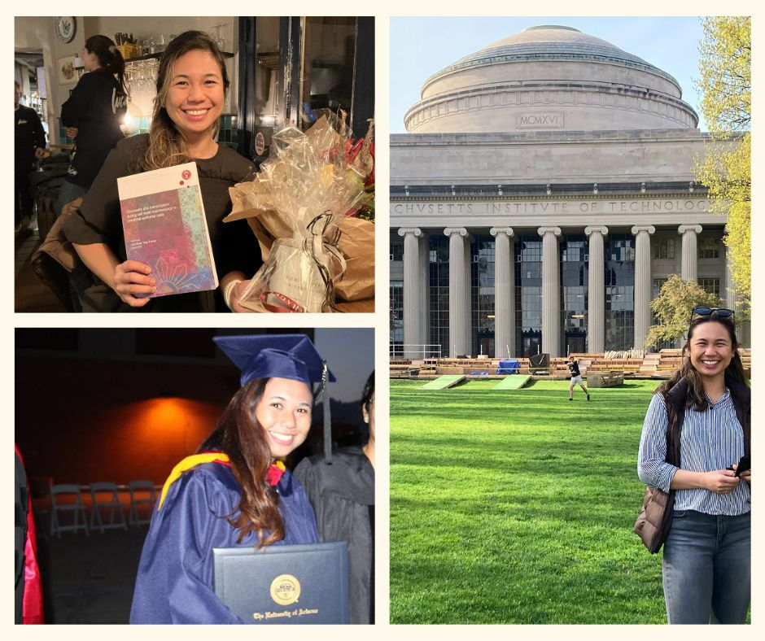
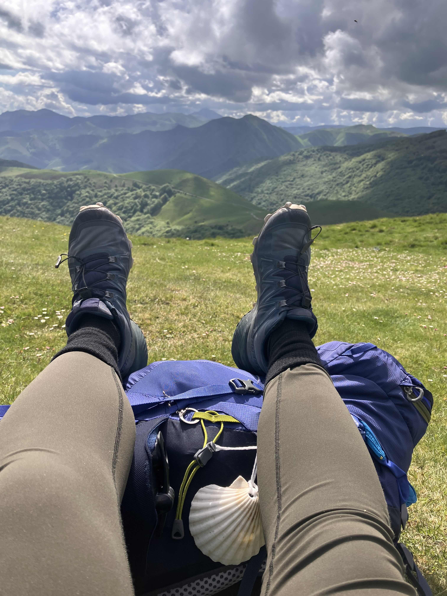

Click anywhere to close
I built my scientific career across 4 countries following my curiosity in (1) what identifies a healthy vs diseased cell; (2) where these information are encoded inside the cell's nucleus; (3) how this information is forgotten to adopt a new identity and (4) why remembering their identity is important in rebuilding organs after damage.
Milestones that propelled me forward.




I am a daughter of two academics, born and raised in the Philippines. I built my career across four countries — following my curiosity about how cells work, how they remember, and how they rebuild.

My scientific journey began with a fully-funded US State Department scholarship to the University of Arizona, where I studied molecular and cell biology and did research on patient-derived cells. Motivated by doing science for the better good, I went back to the Philippines and helped build the first ever biobank in the country from patients with gynecologic cancers to understand the relationship of endocrine disrupting chemical exposure and disease.
I felt that there was still room to grow professionally and scientifically, so I pursued a PhD at the University of Copenhagen through the iMED - Molecular Mechanisms of Disease program and that took me deep into chromatin biology — specifically on how cellular identity is encoded and maintained at the molecular level. In the midst of my PhD, I wasn't sure what to do next. All I know is that I enjoyed putting my ideas into writing and that took me places so far so I wanted to explore the possibility of staying in academia and "try my luck". I stumbled upon the Novo Nordisk Foundation fellowship for Postdocs abroad and thought, this was a good opportunity to "try my luck" but also to practice my writing skills for my PhD thesis. I got lucky indeed and was awarded DKK 4,000,000 to pursue postdoctoral research at MIT where I worked to understand how cells can be made to forget their identity and adopt a new one, in a controlled way.

About 2 years in at MIT, I have seen a different flavor of the academic system influenced by the changing political landscape and decided life is too short to be in the crosshairs of this. I took a career break and on Spring of 2025, I decided to walk the Camino de Santiago from France to Santiago de Compostela in Spain - 800kms. While walking, I realized I needed to work where I could see the people my science was meant to serve. In the last 100ms of my walk, an unexpected door opened and I got in touch with a former colleague. He now leads a research group in IDIBELL, Barcelona and is expanding his research in a tissue I have worked with before my PhD. It was the perfect setting — a research institute embedded in a public hospital, where there's an opportunity to encounter patients in the hallway every day. It felt like a natural next step to get back on my feet and reconnect with the aspirations for impact that first drove me as a young scientist in the Philippines. This brought my spark back to life. How ironic that studying how tissues regenerate after damage would help me rebuild my own life.

When I pivoted into endometrial research, I was stunned by how little we know about this tissue. It is one of the most regenerative organs in the human body — and almost nobody is studying it. The gap is evident. And now I am building something about it.
Having gone through a health overhaul and self-development journey, I'm also passionate about other ways one can improve health and well-being. This along with learning and implementing systems that will position one's routing for success, whatever that means at a given time point. Thus I have ventured into a few side quests...